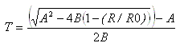

Configuring user-defined RTD input channels
RTD cards include several channel types for use with a variety of standard RTD transmitters. The User-Defined type enables users to use a calibrated platinum RTD and define its coefficients in the RTD card's User-Defined channel for maximum accuracy.
The channel uses the Callendar-Van Dusen linearization equation. Typically, this provides high accuracy above 0° C. If temperatures are below 0° C, some error is introduced. It is up to the customer to determine if this level of accuracy is appropriate. The equation is:

Where:
A = Alpha × (1 + Delta/100))
B = -Alpha × Delta × 10-4
R = Resistance at temperature
R0 = Resistance at 0° C
Alpha = a Callendar-Van Dusen constant configurable as a channel parameter value
Delta = a Callendar-Van Dusen constant configurable as a channel parameter value
The following example shows the channel parameter values for an application using a Pt 100 RTD at a maximum temperature of 850° C, a 100 ohm resistance at 0° C, and the calibrated RTD coefficients for ALPHA and DELTA.